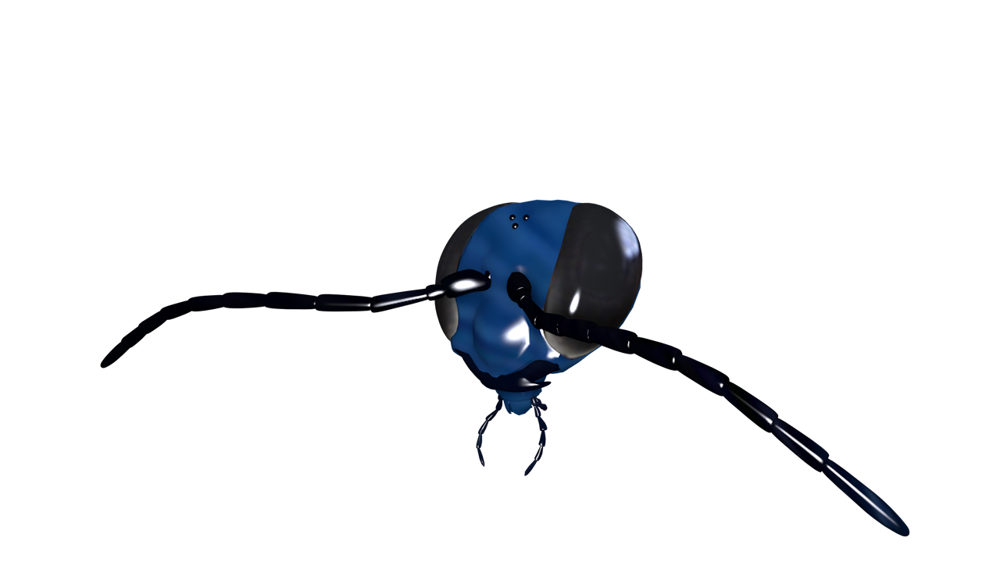
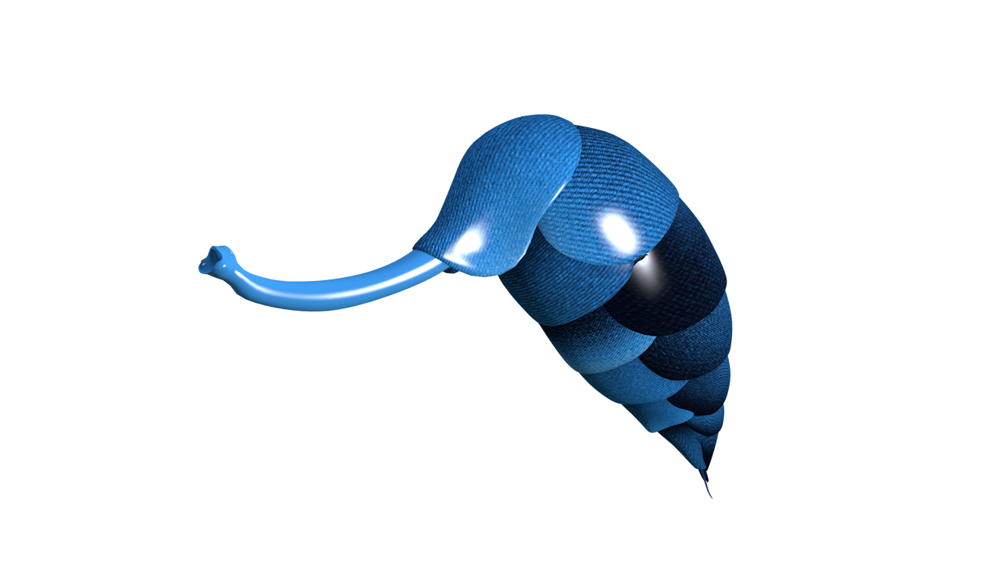
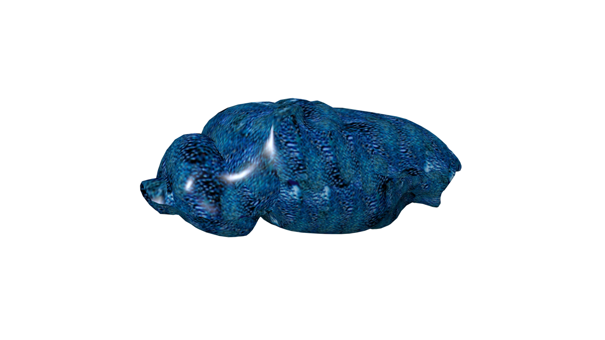
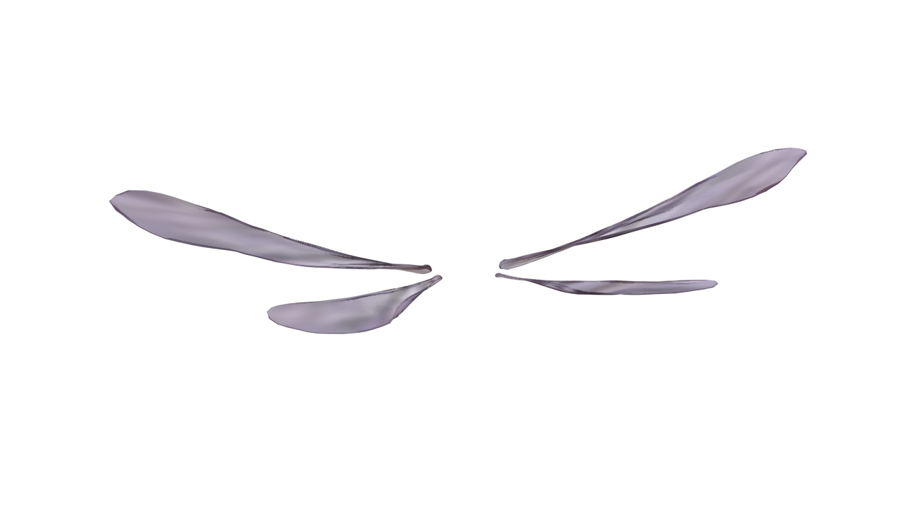
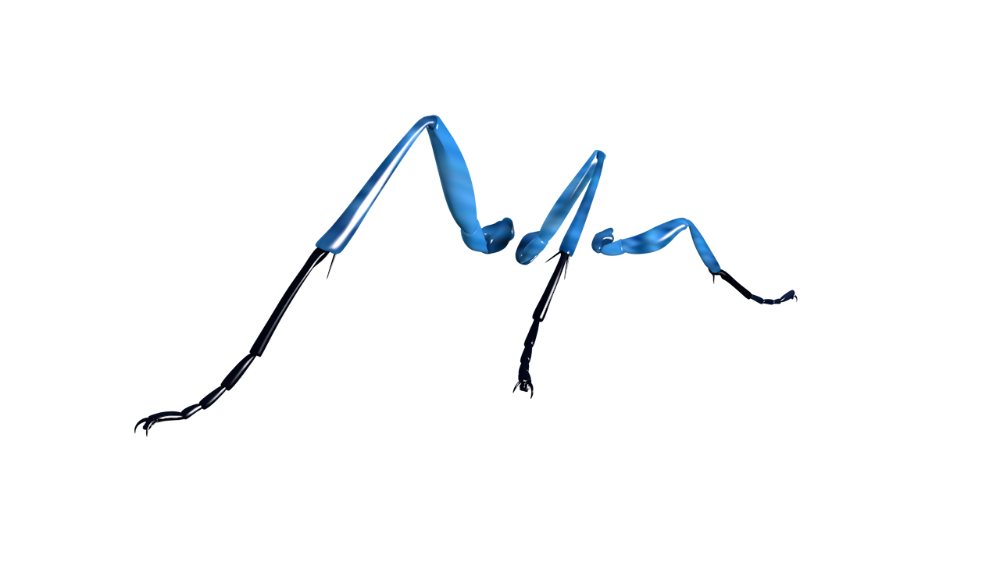

Hamburger Menu Icon
Main Information
Logo
Blue Mud Dauber
- Scientific name: Chalybion californicum
- Kingdom: Animalia
- Genus: Chalybion
- Order: Hymenopterans
- Phylum: Arthropoda
- Class: Insecta
- Family: Sphecidae
A beautiful metallic blue species of wasps was first seen and described by Henri Louis Frédéric de Saussure in 1867. It is known that many wasp males contain ovipositor but with Blue mud dauber wasp, males do not have an ovipositor. The absence of an ovipositor makes them non-aggressive towards humans and cannot sting.
Interactive UI
Head Info
Head
In addition to their large compound eyes, wasps have several simple eyes known as ocelli, which are typically arranged in a triangle just forward of the vertex of the head. Wasps possess mandibles adapted for biting and cutting, like those of many other insects, such as black widow spiders, but their other mouthparts are formed into a suctorial proboscis, which enables them to drink nectar.
Ovipositor Info
Ovipositor
The ovipositor is a tube-like organ used by some animals, especially insects for the laying of eggs. In insects, an ovipositor consists of a maximum of three pairs of appendages. The details and morphology of the ovipositor vary, but typically its form is adapted to functions such as preparing a place for the egg, transmitting the egg, and then placing it properly. For insects, the organ is used merely to attach the egg to some surface, but for many parasitic species (primarily in wasps and other Hymenoptera), it is a piercing organ as well.
Like other types of wasps, males do not have an ovipositor, and therefore cannot sting.
Notum Info
Notum
The notum is the dorsal portion of an insect's thoracic segment. Typically the notum is a single large sclerite, but often it is divided into the alinotum which bears the wings and the postnotum which bears the phragma.
The phragma, or endotergite, is a transverse infolding of the intersegmental sclerite, and its main function is to provide a reinforcing basis of attachment for the dorsal longitudinal muscles. Accordingly phragmata tend to be best developed in actively flying insect species. In most winged insects, the structure of each successive notum is quite variable.
Wing Info
Wing
The wings of both the males and females are opaque and tinted. The two pairs of membranous wings are held together by small hooks and the forewings are larger than the hind ones.
Like many other wasps, adult Chalybion californium needs floral nectar to provide the energy they need for flight. While the adults feed on flowers, they feed their developing larvae high protein foods like spiders (often the black widow, Latrodectus spp.)
Legs Info
Legs
Wasps physically differ from bees in that their bodies are typically more streamlined, their waists and legs narrower and their bodies devoid of pollen-grabbing bristles. A wasp has the body of a predator, not a forager.
The thorax features six spindly legs and a pair of swift, membranous wings. The legs and wings in many species provide enough strength for the mud dauber wasp to fly away with a paralyzed victim in its grips.